先從這幾題刺進去
議題地圖
能源、居住、醫療、科技……挑你在意的點進去；每頁都能直接分享。

為何對標瑞士
台灣與瑞士同樣缺資源、靠腦力；方向對了，才有機會成為區域的穩定核心。

高產值經濟：金融、精密、小體積
高 GDP 來自高單價服務與精密產業，不是堆原物料。

魔鬼在細節：工程與實作文化
從高鐵工地到教育，細節文化決定品質——不是口號，是每個結點都沒有彎矩。
觀光、保險與風險社會
瑞士能容許高風險極限運動，背後是保險、服務業與理性文化的配套。
安樂死與生命自主
決定自己的生死，是否也是一種自由——以及健保資源如何被重新想像。
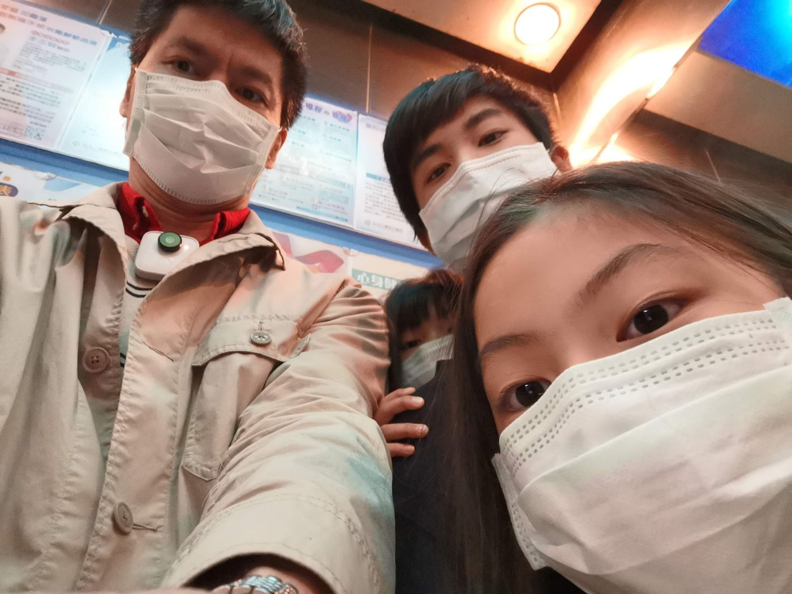
台灣醫療輸出
健保普及是優勢；下一步是把醫療能力輸出世界，而不只是自己用。
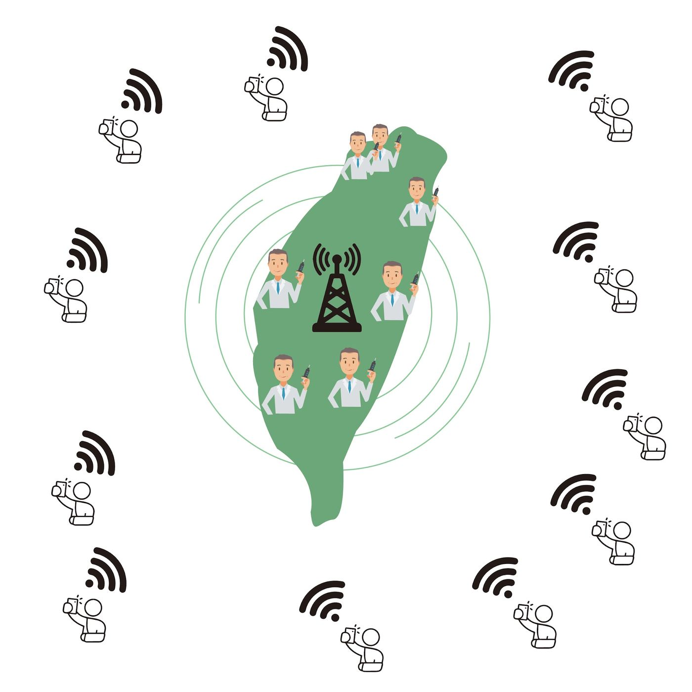
遠距醫療與全球健保中心
從台灣試點全球遠距醫療健保中心：世界各地的人可買台灣保險、接受遠距診斷。
疫情：四五百年一遇的契機
管制成功讓台灣被看見；這是重審供應鏈、醫療與生活方式的歷史時點。
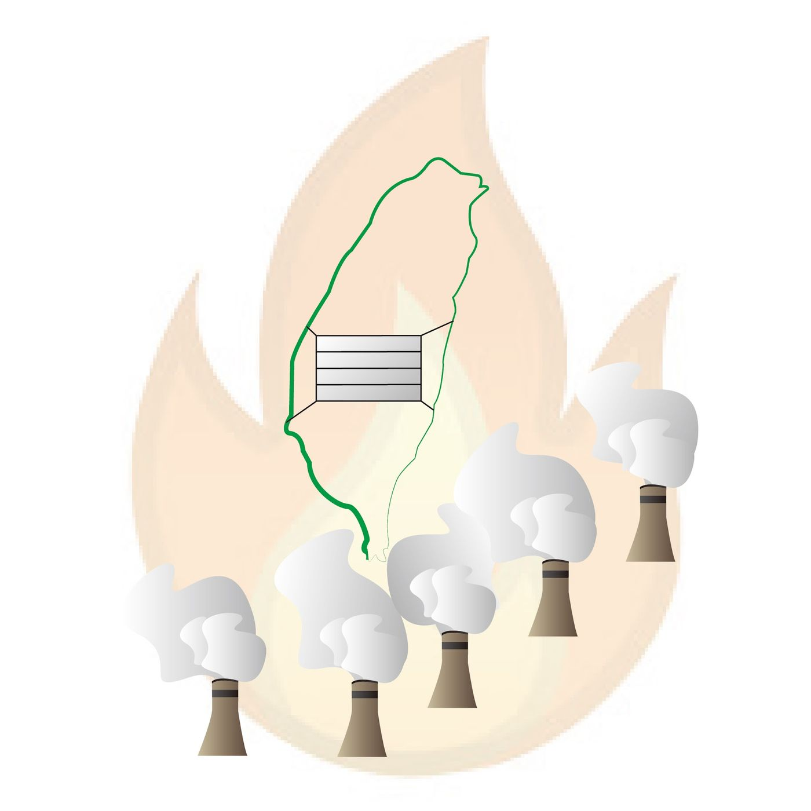
燃煤發電與空污
火力占比過高，是中部空氣與公共健康的核心問題——孩子在大氣中上課。
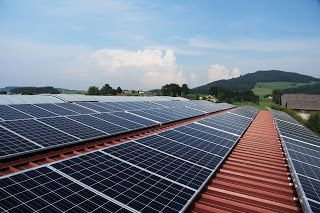
公有屋頂光電與行政法人
把政府建築與公有土地投入光電；用行政法人簡化流程，不要只增加公務員風險。

離岸風電與能源自由化
四面環海是條件；重點是開放平台與市場機制，而不是口號或無限躉購爭議。

V2G 與抗空污電動車債券
電動車當移動電廠：尖離峰價差可支撐財務，還能給婦幼家庭開車。

時間電價
沒有價差訊號，再生能源與儲能很難長出來——市場需要聽得懂的價格。

水力發電與土地彈性
多山本該有更高水力占比；卡在土地取得、開發模式與政治妥協。

核能與理性討論
情緒與選票之外，仍需面對碳排與基載：恐懼要被理解，但不能替代計算。

農地工廠與供應鏈
疫情後供應鏈重組；農地工廠要用數據與環保標準談，而不是道德口號互罵。
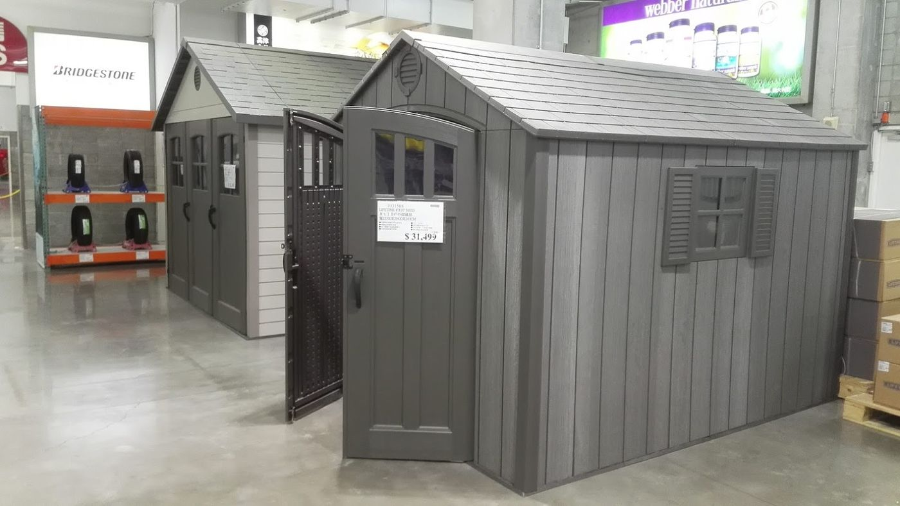
租屋社會 vs 有土斯有財
瑞士高租屋比，與金融商品是否發達、住宅是否被過度投資有關。
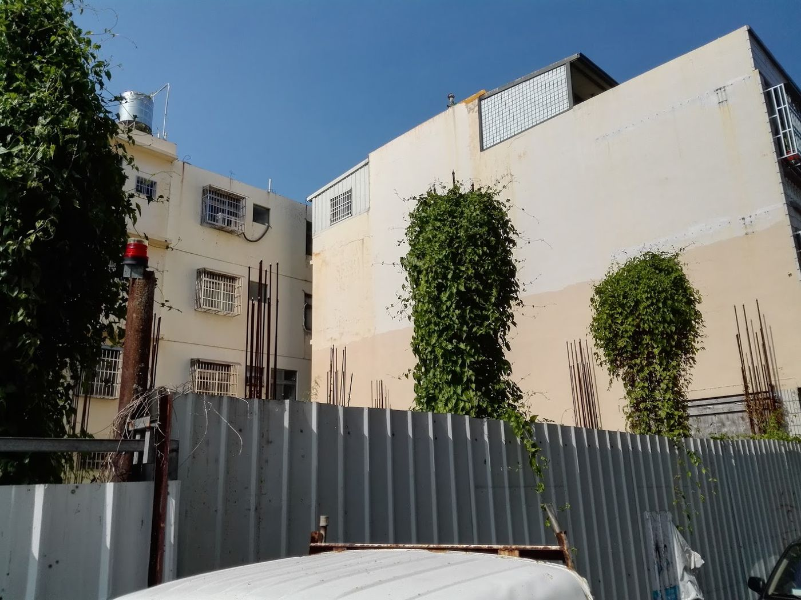
居住正義與可負擔住宅
社會住宅若導致市場崩盤，弱勢可能更慘；正義需要供給設計，不是騙票口號。
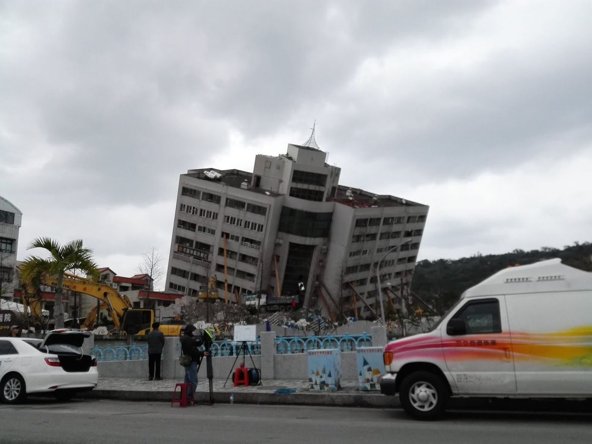
耐震、重建與標準圖時代
花蓮地震提醒：老屋與耐震是公共安全，不是私領域的運氣。
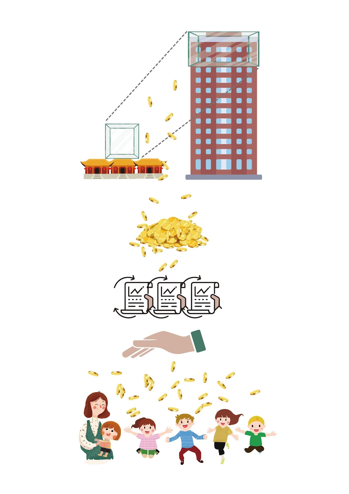
容積移轉與教育基金
古蹟容積變現不該直接花掉；買資產用孳息養教育，才是長線公共投資。
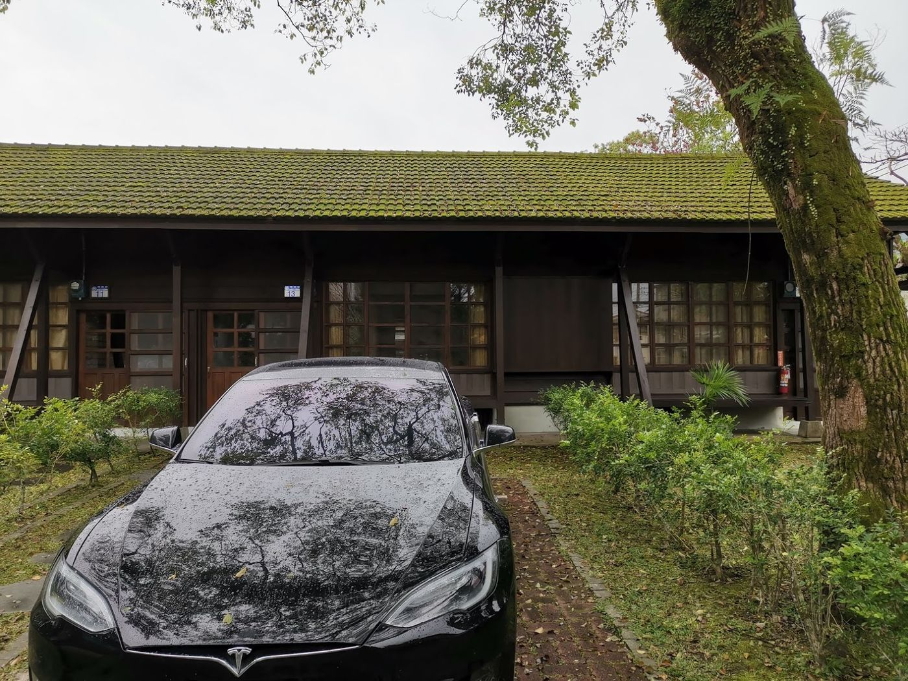
舊宿舍、糖廠與空間再生
日治宿舍變成飯店：空間可以換用途，城市就可以換想像。
金融業是下一波核心
治安、信用、司法與國格，是金融業能長的地基——不只靠台積電。
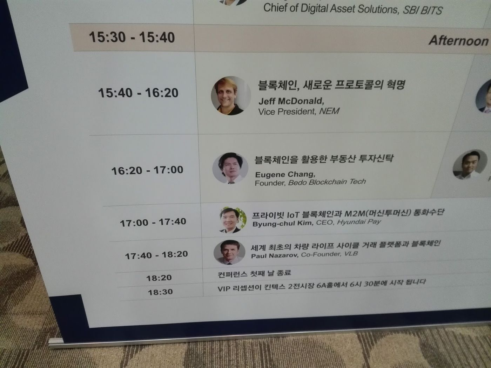
金融科技與區塊鏈實作
從韓國 Fintech 講台到沙盒：技術要落到保管、抵押、合規的產業，而不是只剩炒作。

遠距上班與 AI 考核
差勤不再靠打卡；用成果與目標管理，AI 影像只是工具不是監視幻想。

遠距司法與 4K 審判
法官與當事人線上參審，是效率也是可近性——司法不該假設人人住得起法院旁邊。
區塊鏈與手機投票
點對點能否降低中間成本、讓參與更可及——民主的技術債該被攤開。
公投：民主或操弄
英國脫歐提醒：公投是工具，制度設計決定它是民主還是情緒按鈕。
兵役、後備與防衛結構
瑞士可快速動員；台灣威脅來自空與海，結構不同，策略不能照抄。
國家與認同
海蒂是不是瑞士人的爭論，映照台灣：語言、歷史與「我是誰」的長期張力。
書包、出版社與教育綁架
孩子書包比公事包還重，是系統問題——一綱多本與實體教科書利益。

文化輸出與城市美學
從百老匯到在地花市，文化是產值；政府補助不是唯一商業模式。

八十天競選觀察
證明選舉非難事；也是對效率、媚俗與選民責任的省思——我已不再從政。
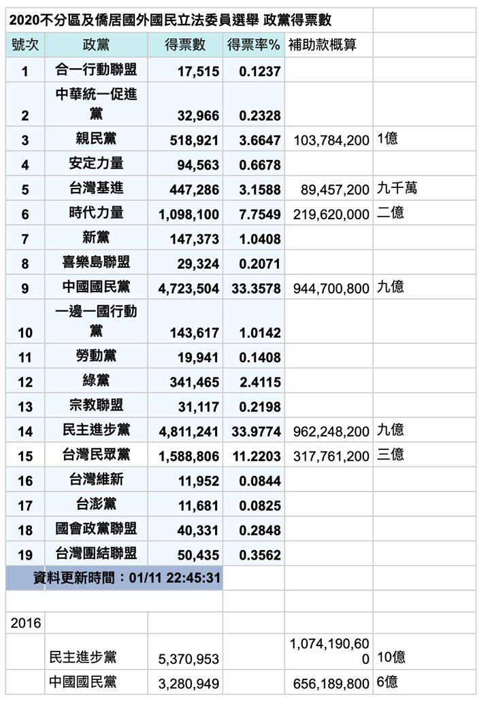
線上線下行銷實驗
沒有樁腳時，臉書、路線規劃與量入為出的廣告，是素人僅有的工具箱。